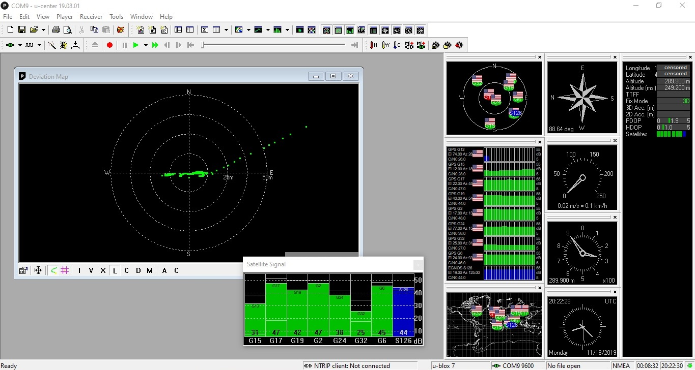

Active GPS antenna from ebay
Contents
How is GPS active antenna connected to the GPS module
I've ordered GPS module (GYNEO6MV2 Module GPS NEO-6M) with a small passive ceramic antenna that had weak signal.
I wanted to replace it with better antenna. So i've ordered active antenna. It has to be powered with 3 to 5V DC by injecting the power to it's SMA connector. SMA is standard one, with inner thread and pin at the center.
To inject the power I also needed to order some power injector. The ones with aluminium case were pricy, so i've ordered bare PCB RF bias tee, that had only a transparent heatshrink on it. Bias tee has two wires, one red to plug +5V in and one black for power ground. The SMA connector closer to those 2 cables has DC power injected. This side is connected to the active antenna.
The other connector blocks DC so only signal goes trough to the receiver. This side is plugged into NEO-6M GPS module. GPS module has U.FL connector.
To connect them I used ebay SMA to SMA cable and ebay SMA to U.FL adapter. (Don't mistake this for MHF4 or MHF3 types, those won't fit and are smaller. If there is any mention of MHF4 in listing don't order it.). Ebay listings have wrong pictures, titles or descriptions, sometimes they claim they have RP SMA to U.FL adapter, and on picture it is standard SMA. I ordered RP SMA one and it was fortunately the standard SMA to U.FL.
GPS module is powered by 3.3V from CH340G USB to serial converter. Signal levels on CH340G are selected to be 3.3V using jumper connecting pin headers on a serial module. Serial module is connected to notebook using USB cable. RF bias tee and antenna are also powered from CH340G module, from 5V pin that is connected to USB power. Antenna LNA could possibly get interference from PC 5V USB power bus.
{kind=link}
Reception test from a balcony
Antenna worked. To test antenna i used ublox u-center v19.08.01 software to connect to GPS module
Because i tried to put the antenna to the side of a building, the position is not precise. I got fix.
With Antenna put out of the balcony, position was shifted approximately by 23m from antenna's real position. Deviation map is showing differences of under 25m of average position with one larger glitch line. Highest signal level for this quick test was 48 dB and lowest 34 dB, 6 sattelites were marked as green (good reception) and one as blue on sattelite signal pane.
With antenna inside, GPS module can ocassionaly get fix and sometimes it loses fix and the position is moved by 136m. There is much more deviation from average position in this case, the position flies around.
After disconnecting power to active antenna, only 1 to 4 sattelites are randomly received with signal levels under 22 dB.
Signal quality with antenna powered on and placed on a side of a tall building: 
{kind=link}
What can be improved
- To get better precision of position, putting the antenna on roof of building or on open and unobstructed area is must.
- To increase the position and time precision, more precise and quality GPS module can be purchased. For higher price.
Part list
Active GPS antenna - "28dB LNA Gain 1575.42MHz Male SMA Male GPS Active Antenna Stronger Singal NEW"
- Ebay seller: [1]
- Ebay item: [2]
- Has 3-5V power
- Has standard SMA male connector (inner thread, pin in the center).
- Price: US $2.99
RF bias tee - "6GHz 10MHz-6000MHz Wideband Amplifier Broadband RF Feeder RF Isolator Bias Tee"
- Ebay seller: [3]
- Ebay item: [4]
- Has 2 standard SMA female connectors (outer thread, hole in the center)
- Price: US $2.78
GPS module - "GYNEO6MV2 Module GPS NEO-6M GY-NEO6MV2 Board with Antenna for Arduino K"
SMA female to U.FL adapter - "RP SMA Female to uFL/u.FL/IPX/IPEX RF Coax Adapter Assembly RG178 Pigtail gl"
- Beware of listing inconsistences standard SMA can be advertised as RP SMA, check listing picture for best guess.
- Also if listing states it is MHF4 or MHF3 type, it's smaller than U.FL and it won't fit.
- Ebay seller: [7]
- Ebay item: [8]
- Standard SMA female (outer thread, hole in center) to U.FL connector
- Price: US $0.81
15 cm SMA male to SMA male cable
- has standard SMA male connector on both sides (inner thread, pin in the center)
- Price: under 2$/piece
CH340G Serial converter - "1PCS CH340G RS232 Upgrade to USB TTL Auto Converter Adapter STC Brush Module"